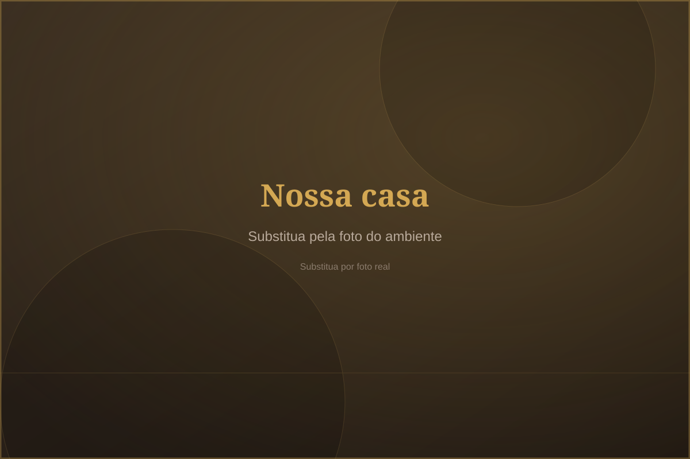
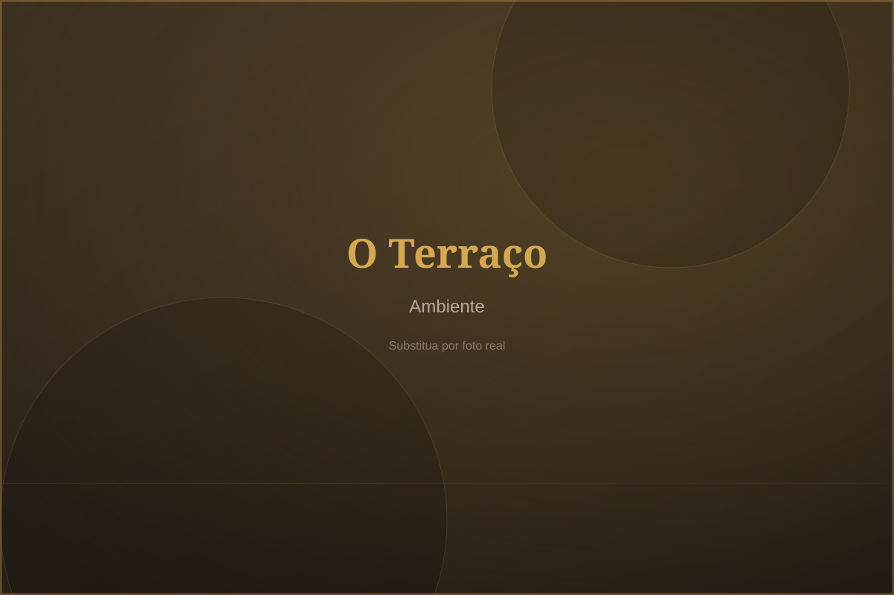
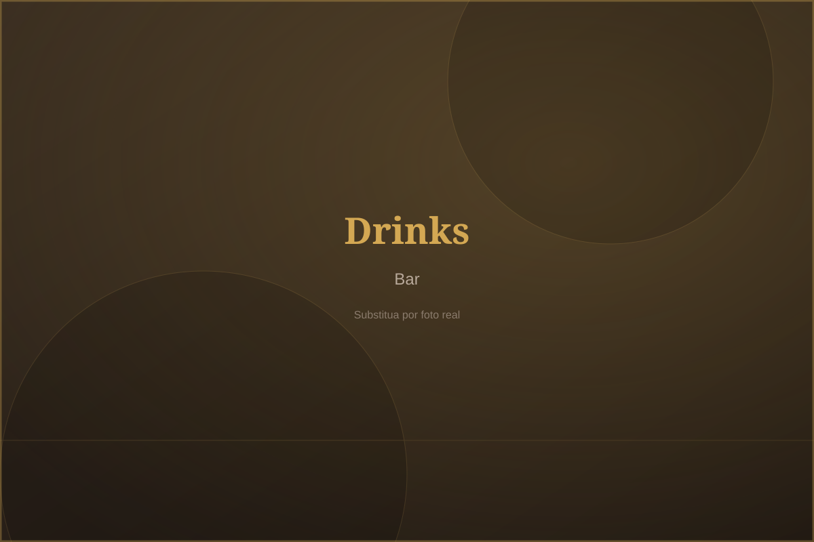
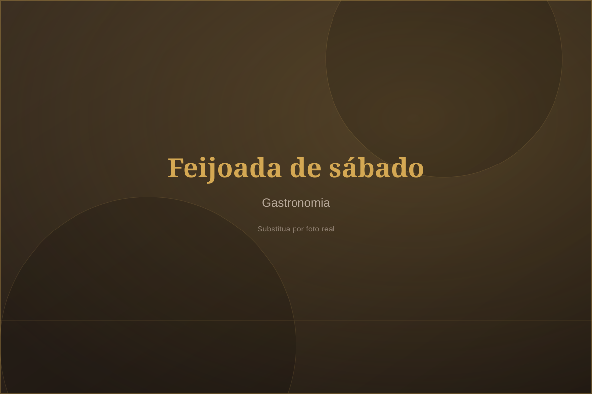
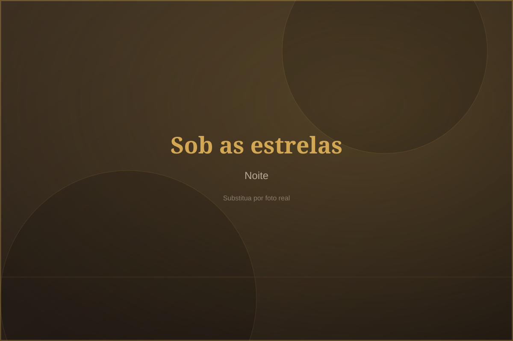

Música ao vivo
Programação de música ao vivo para embalar sua noite. Artistas e DJs passam pelos nossos palcos regularmente.
Terraço Urbano é um bar e restaurante na Zona Norte de São Paulo para quem gosta de boa música, drinks autorais, porções generosas e aquele clima de encontrar os amigos. Com direito a feijoada aos sábados, espaço kids e canto acolhedor para o seu pet.
O Terraço Urbano nasceu na Zona Norte de São Paulo com um propósito simples: ser o ponto de encontro do bairro. Um ambiente descontraído e sofisticado, onde o clima urbano se encontra com a boa gastronomia e a música ao vivo.
Do happy hour depois do trabalho à feijoada de sábado em família, aqui tem espaço para todas as versões de você. As crianças têm o cantinho delas, o pet é bem-vindo e a música é de verdade.
[INSERIR INFORMAÇÃO: história completa do restaurante, ano de fundação e time]
Faça sua reserva
Cada detalhe pensado para o seu momento — seja ele a dois, com a família ou com o grupo inteiro.
Programação de música ao vivo para embalar sua noite. Artistas e DJs passam pelos nossos palcos regularmente.
Drinks autorais elaborados com capricho e porções generosas para dividir. Do clássico ao criativo, tem opção para todo gosto.
A feijoada completa virou tradição no nosso sábado: arroz, couve, farofa, laranja e torresmo. Perfeita para a família.
As crianças têm um espaço pensado para elas enquanto os adultos relaxam. Família inteira é sempre bem-vinda.
Seu pet é da família e aqui é bem tratado como tal. Traga seu companheiro para o nosso terraço.
Aniversários, confraternizações e eventos especiais. Nosso espaço recebe grupos e celebrações com a estrutura certa.
Peça seus favoritos pelo iFood e receba tudo no conforto do seu cantinho.
Música ao vivo, feijoada de sábado e noites especiais. Garanta seu lugar na próxima programação.
Um gostinho do clima do Terraço: ambiente, comidas, drinks, eventos e espaço kids.




4,3 ★ no Google, com mais de 700 avaliações. [INSERIR INFORMAÇÃO: adicionar avaliações reais do Google fornecidas pelo cliente — nunca inventar depoimentos.]
Garanta seu lugar no Terraço Urbano. Fale com a gente por telefone ou WhatsApp e confirme seu horário — é rápido e sem complicação.
Horário
Endereço
R. Maj. João Nunes, 96 — Jardim São Paulo (Zona Norte), São Paulo/SP
Estamos pertinho de você. Confira o endereço e abra a rota no seu app favorito.
Endereço:
R. Maj. João Nunes, 96
Jardim São Paulo (Zona Norte) — São Paulo/SP
CEP 02046-070
Novidades, promoções e os bastidores do dia a dia você acompanha por lá.
@terracourbanoTraga a família, chame os amigos, leve o pet. Sua mesa no Terraço Urbano está a uma mensagem de distância.